Japan / Hiroshima / Kitahiroshima
Kitahiroshima, Hiroshima: things to do, food and stays
Kitahiroshima · Hiroshima
Kitahiroshima
Highlighted on the Hiroshima map.
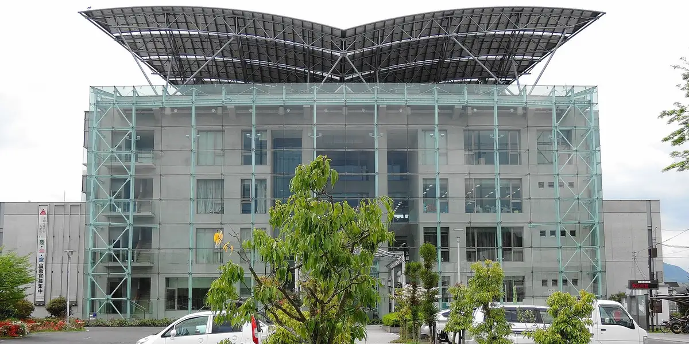
Stay
一棟貸切の宿FERMELL
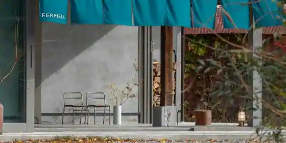
Hitomune Kashikiri No Yado FERMELL
RAKUSAN
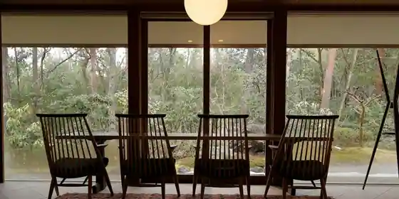
RAKUSAN
Inn in Chosasa, Kitahiroshima with a renovated traditional house.
hitaru 石橋邸
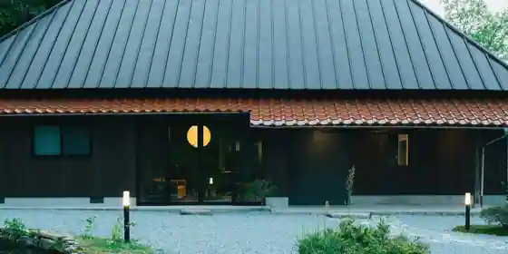
hitaru Ishibashi Tei
Inn in Oasa, Kitahiroshima with one group per day and a renovated traditional house.
アザレア千代田
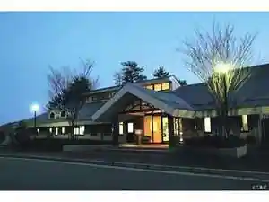
Azarea Chiyoda
Inn in Mibusasaikawauchi, Kitahiroshima with parking; 5-minute drive from Chiyoda IC.
天然温泉 広島北ホテル
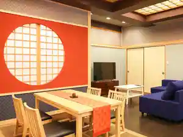
Tennen Onsen Hiroshima Kita Hotel
どんぐり荘
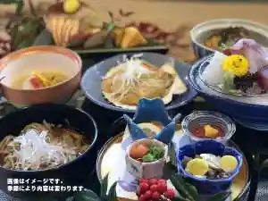
Donguri So
ホワイトシティもりもと
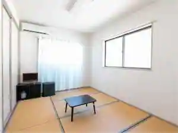
Howaito City Morimoto
あそびのコテージ豊平
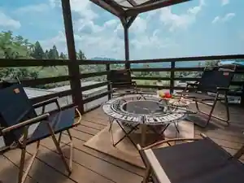
Asobino Cottage Toyohira
ＲＡＫＵＳＡＮ
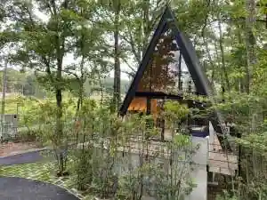
RAKUSAN
芸北温泉 芸北オークガーデン
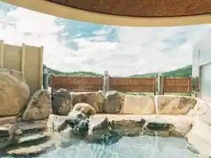
Geihoku Onsen Geihoku Oku Garden
Inn at Geihoku Onsen in Hosomi, Kitahiroshima with open-air baths.
民宿 かみおか
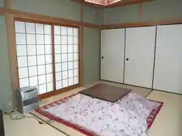
Minshuku Kamioka
Family-run minshuku in Okunakahara, Kitahiroshima with ski access.
ログコテージ カントリーインふーすけ
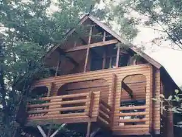
Rogu Cottage Kantoriin Fusuke
Cottages in Hashiyama, Kitahiroshima with a quiet countryside setting.
Dining
三八 松浦
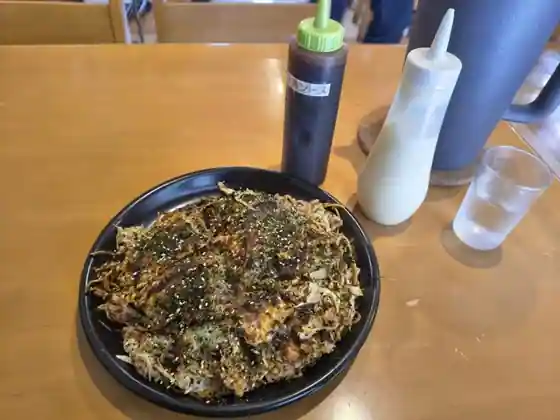
Sanpachi Matsura
どんぐり庵
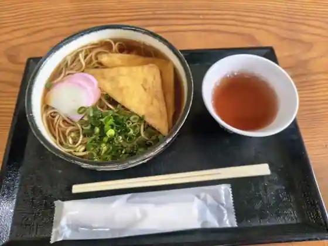
Donguri Iori
酔膳亭 みちづれ
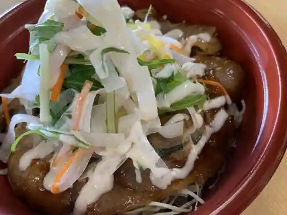
Sui Zen Tei Michizure
お好みハウス 新見
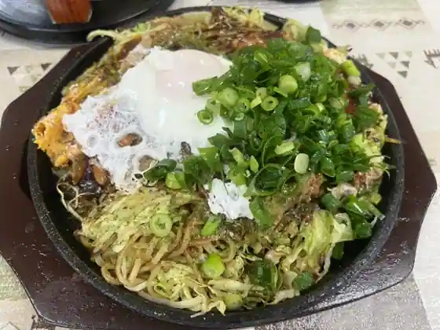
O Konomi House Nimi
へんぽこ茶屋
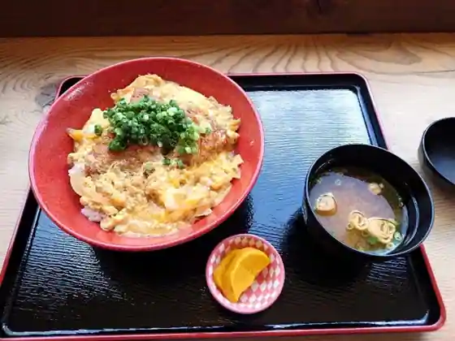
Henpoko Chaya
広島北ホテル
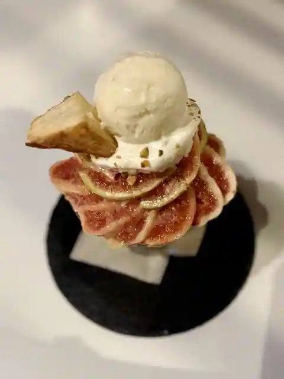
Hiroshima Kita Hotel
舞ロードIC千代田
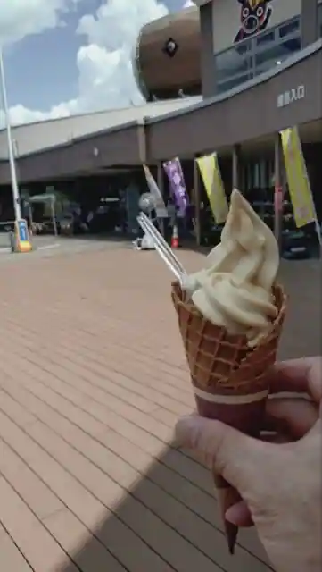
Mai Rodo IC Chiyoda
さんまらーめん 立盛
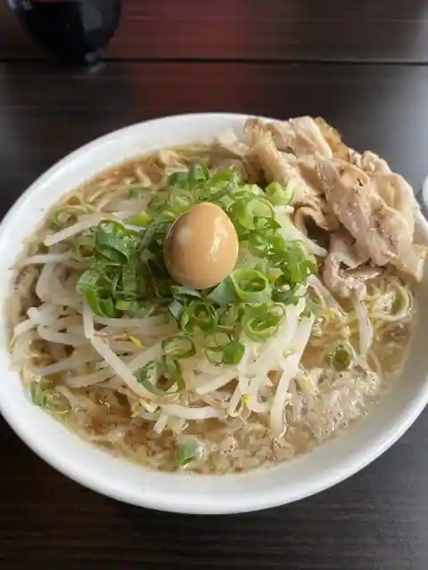
Sanma Ramen Ritsu Jo
啄木鳥
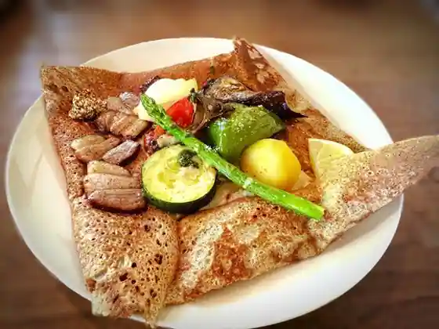
Kitsutsuki
正直村
Shojiki Mura
レストラン 響
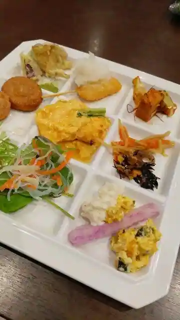
Restaurant Kyo
中華そば ちよだ二番
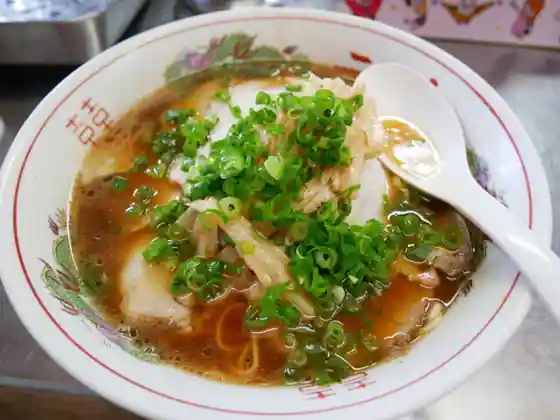
Chuka Soba Chiyoda Niban
かりお茶屋
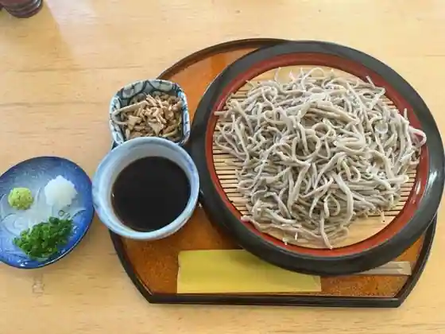
Kario Chaya
むすび むさし どんぐり村 豊平店
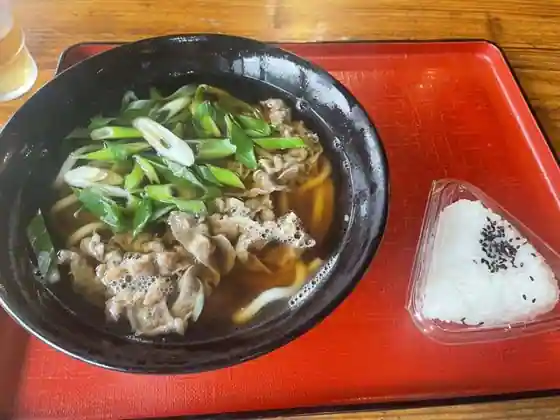
Musubi Musashi Donguri Mura Toyohira
仙水
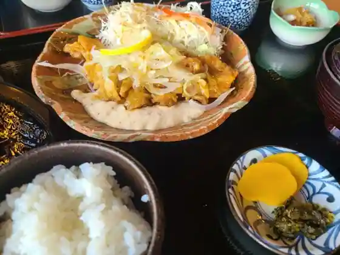
Sensui
芸北ドルチェ
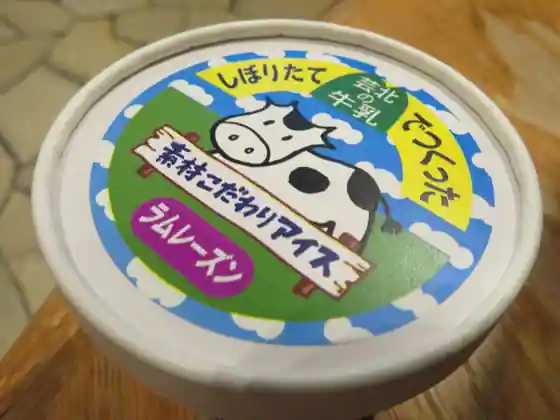
Geihoku Doruche
お食事処 龍頭の里
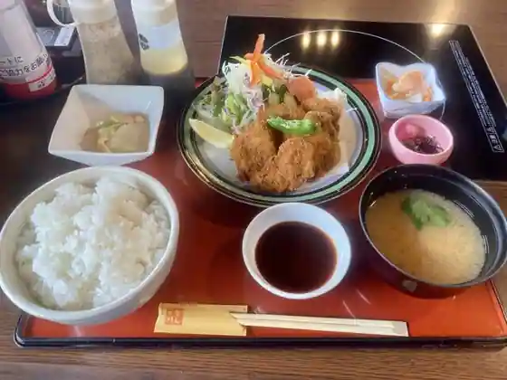
O Shokuji Tokoro Tatsugashira No Sato
ぞうさんカフェ
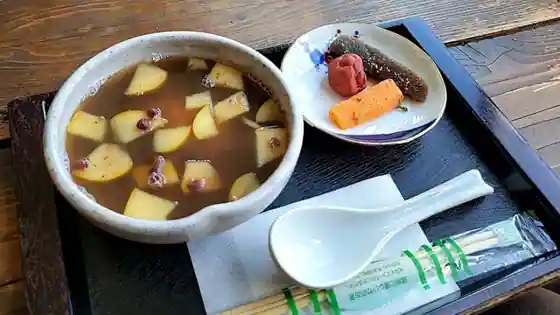
Zosan Cafe
Liand bagel
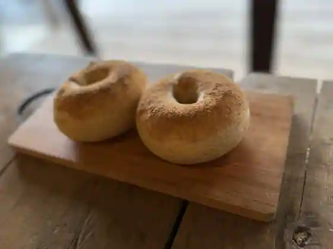
Liand bagel
芸北オークガーデン
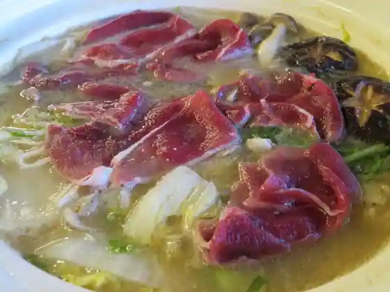
Geihoku Oku Garden
きたひろ食堂
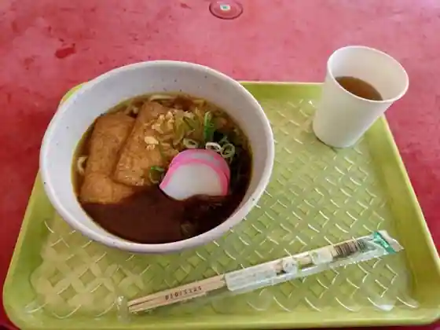
Kitahiro Shokudo
七喜食堂
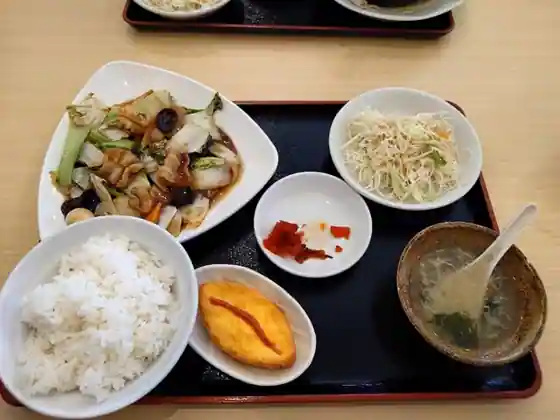
Shichi Ki Shokudo
Casual Kitchen Hana
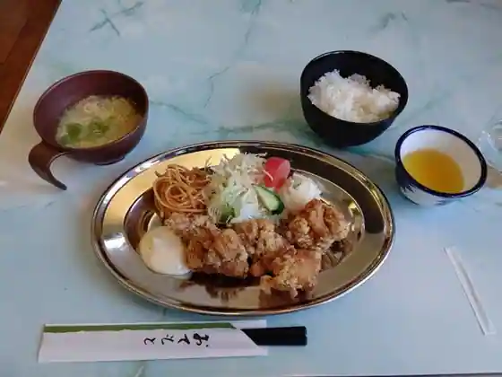
Casual Kitchen Hana
Sights
Hachiman Marsh
Ungetsu Yama
Hijiri Mizumi
Tatsugashira Yama
Mibu no Hanada Shoku
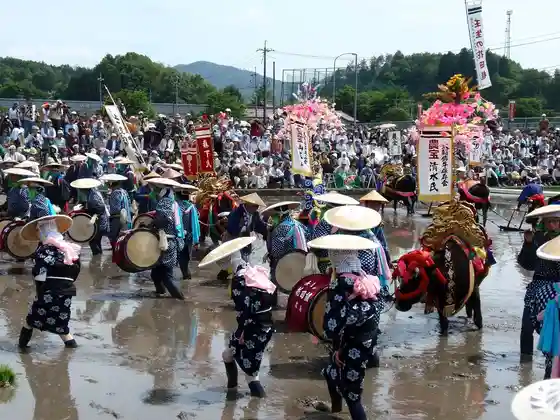